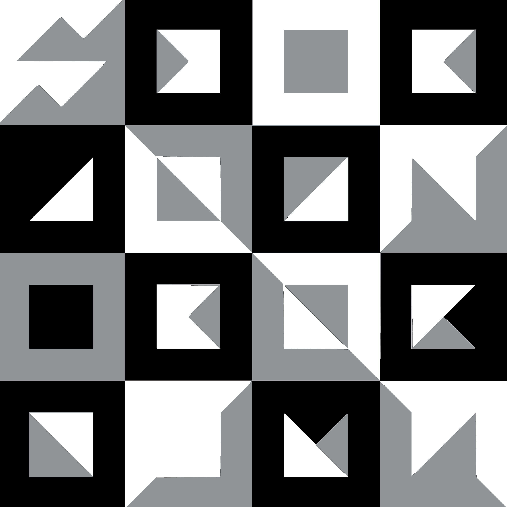
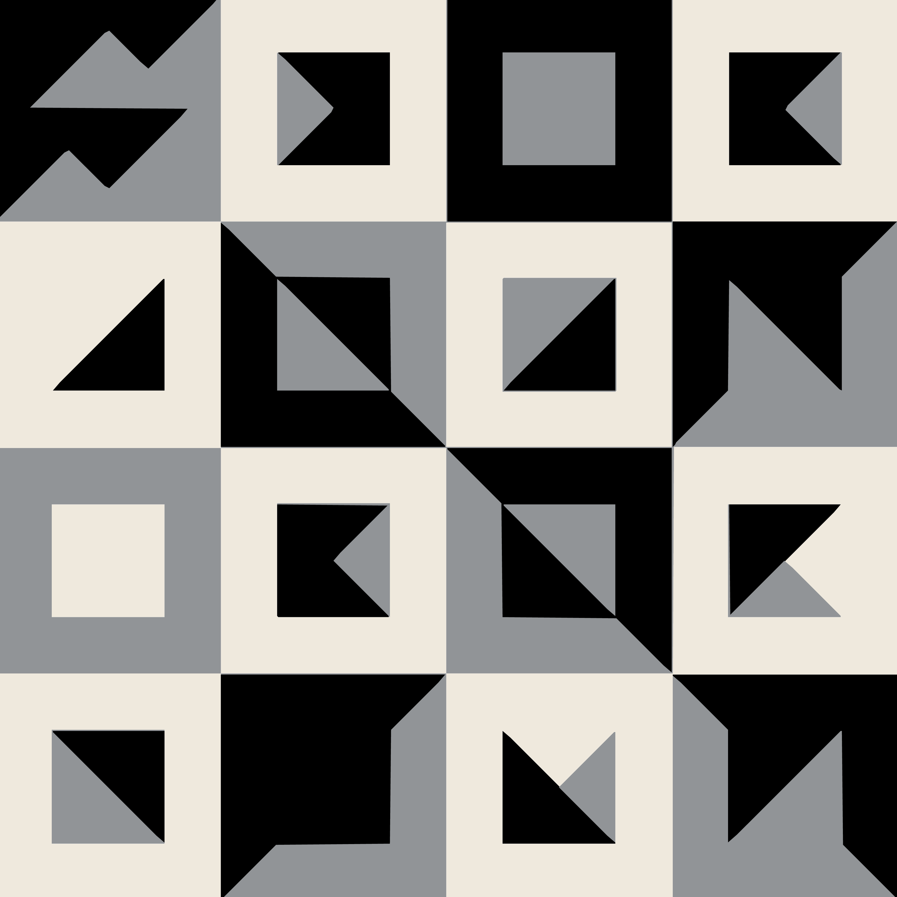

The pattern
is the
monogram,
multiplied.
The MB pattern is a single square tile derived from the monogram itself — gridded, monochrome, composed once and used whole. The tile is the device. Where it goes and how it's framed becomes the brand.
From the monogram, outward.
We took the monogram and treated each unit of its construction grid as a cell. The cells were arranged into a balanced square tile that reads as a field of related shapes — never a literal repeat of the letters.

One unit. Hold it whole.
The master tile is a 16 × 16 micro-unit grid (read as 4 × 4 macro cells) balanced for visual density. It is square. It is monochrome. It has no preferred orientation — but in every brand application, it is shown complete.

Three legal surfaces.
The pattern is monochrome only. Ink on paper (default), paper on ink (reverse), or ink on bone (editorial). No tints, no brand-color washes, no gradients — the tile reads as one of three things, not eleven.


One atom,
three sizes.
The pattern is whole. Where it appears, and how much of it appears, is the design decision. Three legitimate scales — full surface, corner cascade, edge band. No others.
The pattern fills the frame at maximum density (4 × 4 motifs). The viewer reads it as a textured surface — printed lining, watered paper, woven cloth.

A stepped portion of the pattern occupies the lower-right corner of any format. The system calls this the Anchor — see the next chapter for the full specification.
A single row of motifs (4 wide, 1 tall) sits at one edge of a surface. Discrete, indexable, easy to manufacture. The rest of the surface stays clean.
One scale per surface. Two applications of the pattern on the same object compete with each other and weaken both.
Whole, monochrome, alone.
Three rules govern every use of the pattern. They are short on purpose — anything more complicated breaks the device.
- Use the tile whole — always one complete square, never partial repeats inside a frame.
- Keep it monochrome — ink, paper, bone only.
- Lead with whitespace; let the tile sit on a quiet field.
- For corner-anchored applications, follow the Anchor specification.
- Tile small enough to read as background texture or wrapping paper.
- Recolour, gradient, tint, overprint or apply effects to the cells.
- Crop the tile to a non-square frame, or rotate off 90° increments.
- Use the pattern behind the logo, headlines, or photography.